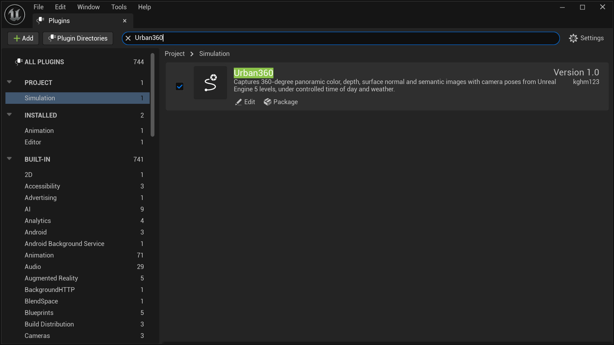
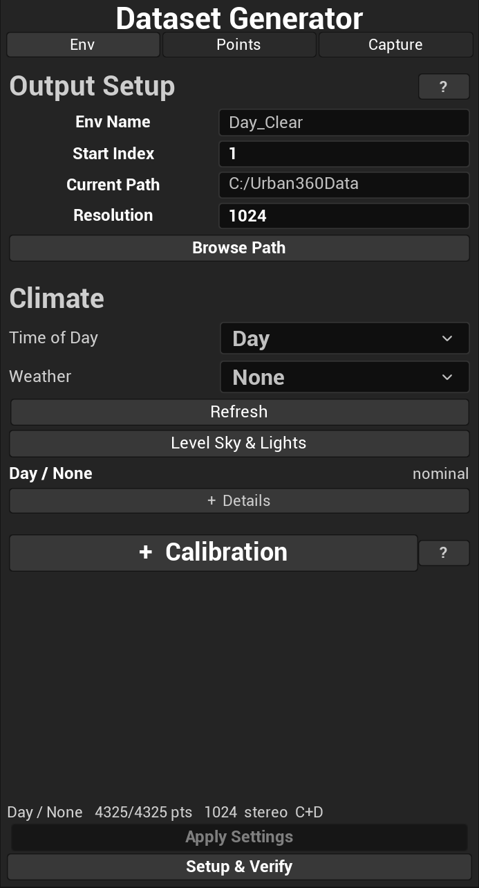

Getting Started
Welcome to the official documentation for the Urban360 Unreal Engine 5 Plugin. This guide covers how to install the plugin and capture your first panoramic data from a level of your own.
Introduction & Requirements
The Urban360 Plugin is an editor plugin that captures 360° panoramic datasets from your own Unreal Engine 5 levels, without manual camera setups or sequence rendering. You draw a road spline, generate capture points along it, and press Play. At every point the plugin renders 168 slices through SceneCapture, each 40° wide and placed every 15° horizontally and 30° vertically (24 × 7), and stitches them into equirectangular (ERP) images: Color, continuous Depth and Surface Normal as FP16 EXR files, and optionally Semantic labels as a PNG. The camera pose of every image goes into a manifest CSV.
Every capture is lit by the plugin's Lighting Standard instead of the level's own sun, sky light, sky and fog, so that different worlds are shot under the same light. The time of day and the weather are chosen in the tool. See Configuration Parameters.
Rendering: captures do not use Lumen
The slices are rendered by UE5's deferred renderer. In Unreal Engine 5.7, scene captures run without Lumen global illumination and Lumen reflections unless a capture turns them back on, and the plugin does not. A capture therefore contains no bounced light, and its reflections come from reflection captures and the sky light. Dense Depth and Normal on glass and water do not depend on lighting: the plugin records the first surface the camera meets in a separate depth pass. Earlier versions of this documentation described the rendering as Lumen-based, which was wrong.
System Requirements
- Engine and platform: Unreal Engine 5.7 on Windows 64-bit only; the plugin ships compiled for this combination. It has been verified with UE 5.7.4. Linux and Mac have not been tested.
- Memory: No particular GPU model has been benchmarked; in practice the limit is memory. The images of one capture point take about 1 GB in stereo at a Resolution of 1024, 5 GB at 2048 and 18 GB at 4096 (mono about two thirds of that), and playing a large level often takes 10 GB or more on top of that. Above 2048, Setup & Verify shows the estimate next to the memory the PC has free.
- Project: Any Unreal Engine 5.7 project, Blueprint-only or C++. The plugin ships compiled, so it loads without a C++ toolchain or a build step.
- Required plugins: Niagara (weather effects) and Datasmith Content. Both are enabled by default in the engine.
Installation
Urban360 is distributed as a compiled plugin, so there is no build step and it drops into an existing project as it is.
Not yet publicly released
The plugin archive (Urban360_<version>_UE5.7_Win64.zip) will be published together with the paper and is not available for download yet. To try it before then, request early access through the contact form. The steps below describe the installation once you have the archive.
- Obtain the archive, from the public release or from the authors if you were granted early access.
- Create a
Pluginsfolder at the root of your project if there is none yet. Unreal does not create it for you. - Extract the archive so that the whole plugin folder, including its
Contentfolder, sits at<YourProject>/Plugins/Sim2RealDataGen/. - Open the project, go to Edit > Plugins, search for Urban360, enable it if it is not already on, and restart the editor.
- On its first load the plugin turns on DBuffer decals (Project Settings > Rendering), which the rain and snow decals need, and asks for one more restart.
- Open the capture tool with the Urban360 button on the toolbar, next to Play.

Once enabled, Urban360 appears under Project > Simulation in the Plugins browser.
Binary distribution
The plugin is released as a compiled binary for Unreal Engine 5.7 on Windows 64-bit, and its source code is not published. A compiled Unreal plugin is tied to the engine version it was built for, which is why 5.7 is required rather than merely recommended. Blueprint-only projects are supported, since nothing has to be compiled on your side.
Quick Start
All capture work is set up in the Capture Tool, whose panel is titled Dataset Generator. It has three pages (Env, Points and Capture), and at the bottom a status line with Apply Settings and Setup & Verify, which stay visible on every page. The capture itself starts from the editor's own Play button. The ? buttons in the tool explain every field.
- Points page: lay out the capture points. Place a Road Spline along the route you want covered and press Generate Points. Points are laid every Spline Spacing (500 cm by default) across the spline's Road Width (1000 cm, set per spline), and a point with a wall or tree within the Safety Radius (35 cm) is dropped. Generate Points uses the values in the fields at that moment, without Apply Settings, and numbers the new points from the Start Index on the Env page. A point marks a spot on the ground, and the camera stands Camera Height above it. Each point's SceneID becomes the name of its output folder; Renumber renumbers the selected points, or the whole level when nothing is selected, after asking first.
- Capture page: choose what to write. Pick Capture Stereo (Stereo or Mono), the image types under Capture Mode (RGB, Depth, Normal, Semantic; All ticks every one), Capture Count (Single, one image per point, or Group, nine), Camera Height (160 cm) and, for Group, Local Step (10 cm). With a point selected, the page also shows its Capture Target box: a point is shot only while the box is ticked. Target All and Skip All on the Points page set every box at once.
- Env page: set the output and the conditions. Under Output Setup, set Env Name (the name of the output folder), Start Index, the output folder (Browse Path) and Resolution. Under Climate, choose the time of day (Day or Night) and the weather (None, Rain, Snow or Fog). Then press Apply Settings. It saves the values of all three pages at once and applies the time of day, the weather and the calibration to the level. The button turns yellow while there are changes that have not been applied, and Setup & Verify does not pass until they are.
- Setup & Verify. When everything is in order, the button turns green and reads Verified for two seconds, and anything worth knowing appears as a notification at the bottom right of the editor. When something must be fixed, a window lists the problems, each with a code such as
S007; see Troubleshooting & FAQs. This step also sets the level's GameMode to the capture GameMode, and offers to put points that are off the ground back onto it. - Play. Press Play on the editor toolbar. The run captures every point whose Capture Target box is ticked, from Start Index on, and ends Play by itself. It writes a run report (
_run_<date>-<time>.txt) next to the scene folders. The capture does not change any Capture Target box, so pressing Play again shoots the same points again.

The Env page after Apply Settings: Output Setup and Climate, with the status line, Apply Settings and Setup & Verify at the bottom. Apply Settings is greyed out because nothing is waiting to be applied.
What the tool changes in your project
The capture tool sets up the project it is used in. These changes are intended and stay in place:
- DBuffer decals are turned on (Project Settings > Rendering) the first time the plugin loads.
- Setup & Verify sets the level's GameMode to the capture GameMode (World Settings > GameMode Override). That is what makes Play capture instead of play.
While the tool's climate system is active, the level's own sun, sky light, sky and fog are hidden in the viewport and in the capture, and the Lighting Standard lights the scene instead. Nothing about this is saved into the level. While a capture runs, the tool also turns off texture streaming, holds the editor at 30 fps and turns off the editor's background CPU throttling. All of these are put back when Play ends.
Do not package a capture project as a game
A project set up this way is a capture workspace, not a game. The capture classes live in an editor-only module and are not packaged, so a level whose GameMode is the capture GameMode cannot run in a packaged build. If you also need to ship the game, use a separate copy of the project, or remove the GameMode override and the plugin first.